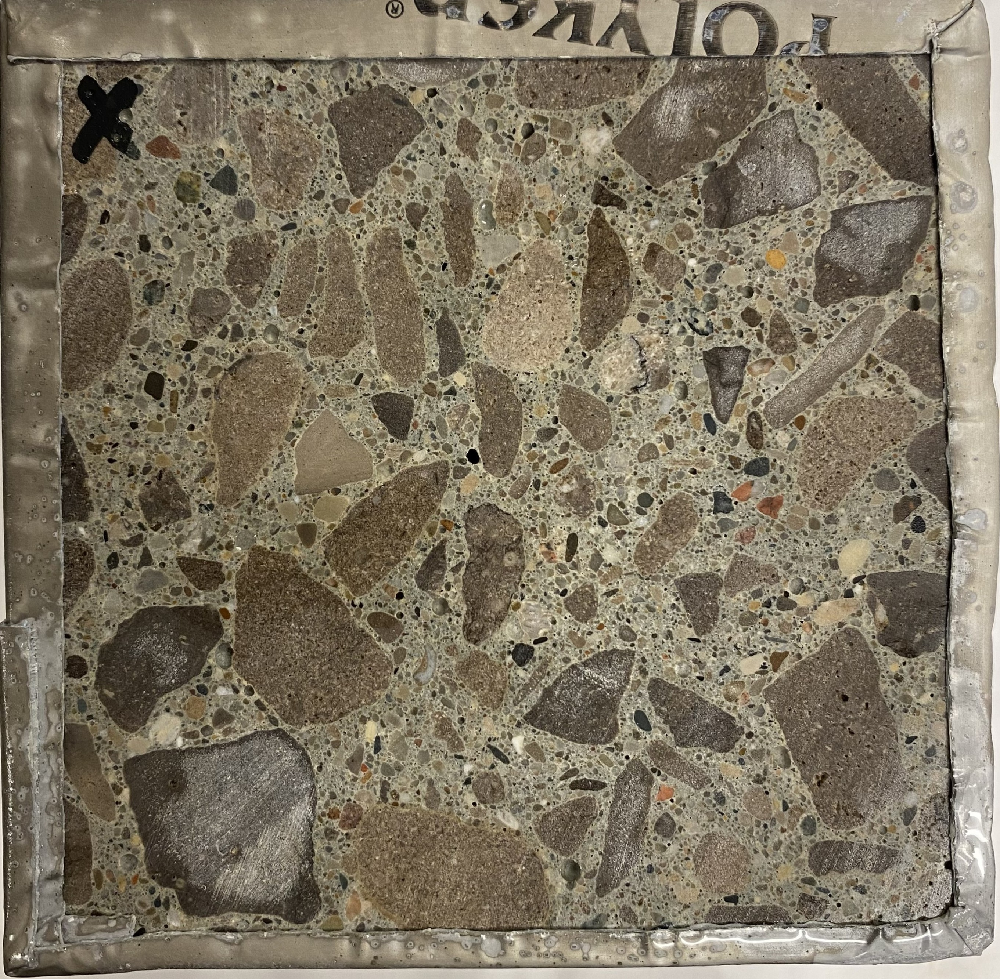

Freeze-Thaw scaling of concrete per RILEM CIF?
Below is some results

0 cycles
Initial surface condition before freeze-thaw exposure.
My research focuses on understanding the role of ionic transport, surface resistivity (SR), and rapid chloride permeability (RCP) in controlling salt scaling behavior.
Key Topics
- Freeze-thaw mechanisms (hydraulic pressure, cryogenic suction)
- Salt scaling behavior under 3% NaCl
- Transport properties (SR, RCP)
- Performance-based durability classification